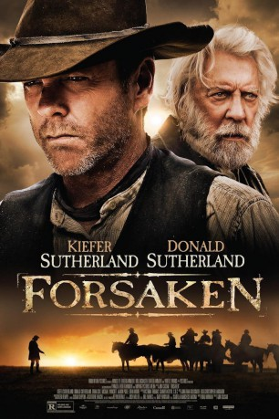

#4032 Forsaken
 
 IMDB-Wertung: 6.3 / 10
IMDB-Wertung: 6.3 / 10  Metascore: 0
Metascore: 0 
Reverend Clayton (Donald Sutherland) hat seinen Sohn John Henry (Kiefer Sutherland) schon vor Jahren schweren Herzens aufgegeben. Damals verließ dieser seine Heimatstadt, um als Revolverheld den Wilden Westen noch unsicherer zu machen. Tatsächlich gilt er nach kurzer Zeit schon als ruchloser, treffsicherer Revolverheld. Johns rücksichtsloses Verhalten hat die Vater-Sohn-Beziehung jedoch zerstört. Nach Jahren des unehrenhaften Lebens als Outlaw hängt John Henry seinen Colt allerdings an den Nagel und sucht seine Heimat auf, um sich mit seinem Vater zu versöhnen und seine Vergangenheit zu vergessen. Darüber hinaus lernt er die schöne Mary-Alice Watson (Demi Moore) kennen, mit der er ein ruhiges Leben führen möchte. Doch das Idyll ist nur von kurzer Dauer, denn schon bald sucht eine Horde gesetzloser Banditen das kleine Städtchen auf...
Jahr: 2015
Dauer: 89 Minuten
FSK:
Land: Kanada Studio: Momentum PicturesTonspuren: DD5.1 - ,
Untertitel:
Auflösung: 1080p (1920x800) Größe: 6963 MB
Genre: Drama, Western
Regisseur: Jon Cassar
Drehbuch: Kevin Reynolds
Soundtrack:
Darsteller:
 Kiefer Sutherland als John Henry Clayton
Kiefer Sutherland als John Henry Clayton Donald Sutherland als Reverend William Clayton
Donald Sutherland als Reverend William Clayton Brian Cox als James McCurdy
Brian Cox als James McCurdy Michael Wincott als Gentleman Dave Turner
Michael Wincott als Gentleman Dave Turner Aaron Poole als Frank Tillman
Aaron Poole als Frank Tillman Demi Moore als Mary-Alice Watson
Demi Moore als Mary-Alice Watson Jonny Rees als Tom Watson
Jonny Rees als Tom Watson Dylan Smith als Little Ned
Dylan Smith als Little Ned- Landon Liboiron als Will Pickard
- Brock Morgan als James Cleary
- Wesley Morgan als Sam Hatch
 Tom Carey als George
Tom Carey als George Chris Ippolito als Bob Waters
Chris Ippolito als Bob Waters- David McNally als Mr.Harper
- Christopher Rosamond als Daniel Peterson
 Michael Therriault als Doc Miller
Michael Therriault als Doc Miller- Ali Webb als Rachel Chadwick
 Siobhan Williams als Emily Chadwick
Siobhan Williams als Emily Chadwick- Justin Michael Carriere als Ed Tealy
- Donovan Workun als Mr. Jenkins
- Terry A. Brown als Chadwick Gang Member
- Joel Jackshaw als Gunfighter
- Joe Norman Shaw als Silver Barrel Bartender
- Maria Fernandez als Pregnant Chinese Lady , uncredited
- Graeme Black als Hank Plummer
- Paul Sillito als Charley Watson
 Dave Trimble als Mr. Parsons
Dave Trimble als Mr. Parsons- Kira Bradley als Mrs. Chadwick
- Don Bland als Mr. Chadwick
- Chris Austman als Wilbur
- Lex Cassar als Tim Slade
- Michael Mitchell als Clyde Burnett
- Colin A. Campbell als Red Crow Bartender
- Cliff Liknes als Chadwick Man #1
- Esther Purves-Smith als Shot Child Mother
- Jeff Hanni als Shop Keeper , uncredited
- Jacob Thurmeier als Boy , uncredited
- Trevor Woroby als Townsfolk , uncredited
Datei: X:\HD-Western-2000-2015\Forsaken (2015, FSK, 1920x800).mkv seit 14.07.2016
Festplatte: HD Eastern+Western
 Es gibt insgesamt 61 Filme in der Gruppe 'HD-Western-2000-2015'
Es gibt insgesamt 61 Filme in der Gruppe 'HD-Western-2000-2015'